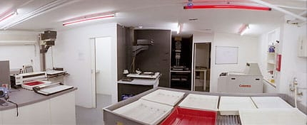

Я тут некоторое время назад немного усовершенствовал идейскую систему экшинов для того, чтобы было проще работать со вторыми шорткатами (второй, это когда нажали, скажем, Command+R, а потом еще раз R или C, или, может, тот же самый Command+R опять, то есть, когда для вызова экшина надо два шортката нажать последовательно).
Делал я все это оттого, что на ноутах часто кнопок меньше, да и расположены они не всегда удобно, поэтому хотелось как-то улучшить кеймап так, чтобы им было удобно пользоваться везде. И еще один поинт был в том, чтобы уйти от использования Fn кнопок, а оставить дефолтные маковские экпоузы и айтюнзы (скажу сразу, что этот пункт пока не выполнен до конца).
А сделал я вот что:
- Возможность нажимать второй шорткат с тем же модификатором, что и первый, даже если второй определен без модификатора. То есть, определен у меня Rename как Command+R, R - значит я должен нажать сначала Command+R, а потом еще раз R, но часто бывает так, что отпустить Command просто не успеваешь и экшин не вызывается. Соответственно, теперь можно нажимать как Command+R, R, так и Command+R, Command+R.
- Если есть несколько экшинов с одинаковым первым шорткатом, то при нажатии этого шортката, через какое-то время появится мелкий попап со списком экшинов и вторыми шорткатами напротив. То есть, например, у меня рефакторинги на Command+R, а дальше R - Rename, X - Extract, M - Move и тп, я могу нажать Command+R, подождать, если не помню что там дальше жамкать, и мне вывалится попап со всеми рефакторингами
Дальше я разбил экшины по мнемоническим правилам, то есть Command+R - Refactoring (Rename, Move, Extract, Introduce variable, etc), Command+F - Find (Find, Replace, Find Usages, Highlight usages in file, Find in Path), Command+N - Navigate (Line, Super, Test) и положил кеймап на github.
К сожалению, я так и не решил проблему с Fn (остались дебаггер и степпинг, букмарки). Предложения приветствуются!
ps: прочитайте README, там есть подробности того, как включить попапчик для второго шортката (он не включен по-умолчанию). Все вышесказанное актуально для идеи, начиная с версии 10. Кеймап по-началу немного непривычный, но быстро привыкаешь и становится удобно :)

В некоторых городах можно арендовать темную комнату со всем оборудованием, чтобы попечатать в ней фотки. Вот думаю, может попробовать рентануть на ночь такую штуку в СФ, когда там буду? Жаль у нас такого нет, похоже(

Замутил из баночки с витаминками фильм-ретривер (замотавшийся кончик пленки вытаскивать), работает как часы прототип.
Нашел апп, который знает как что бодяжить, и сколько какую пленку проявлять!

Time you enjoy wasting is not wasted time. — Bertrand Russel
А мне вспомнился Пахом :)